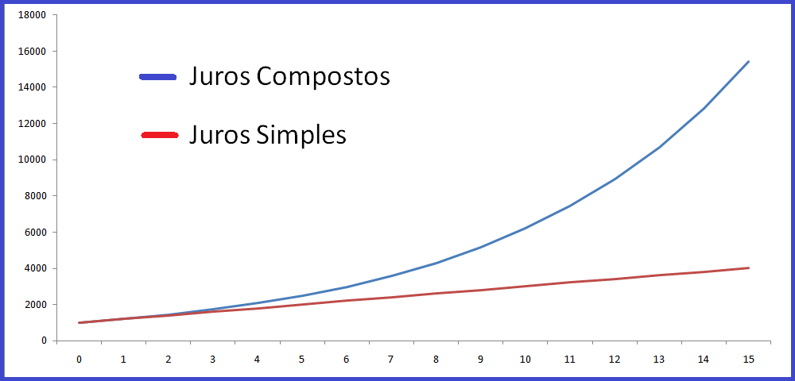

| Home | Logaritmos | Funções Logarítmicas | Matématica Finaceira | Cadastre-se em nosso EAD! | Contato | Auto-Avaliação |
Acredito que matemática Financeira foi o conteúdo que mais tive facilidade em todo ano, pois além de ser algo muito tranquilo, eu já tinha um pouco de conhecimento sobre.
“A Matemática Financeira ou Matemática das Finanças é uma ciência que se preocupa em analisar os fenômenos econômico-financeiros à luz dos métodos quantitativos, fornecendo modelos e processos eficientes na solução de problemas relacionados à tomada de decisão de ordem pessoal, empresarial e governamental” (FERREIRA, 2010).
| Definição | Símbolos | |
|---|---|---|
| Capital Inicial, Principal ou Valor Presente | É o valor inicial de um empréstimo ou aplicação, sobre o qual irão incidir os juros. | C, P ou PV (Present Value) |
| Prazo | É o tempo de duração do empréstimo ou do investimento. É calculado por dias, meses, anos, semestres e etc. | n |
| Juro | É o preço pago pelo empréstimo do dinheiro e o rendimento do dinheiro aplicado. | j |
| Taxa de Juros | É a taxa percentual ou unitária de quanto o capital rendeu ou pelo seu pagamento, numa unidade de tempo (ao dia, ao mês, ao ano etc). | i |
| Montante ou Valor Futuro | É o valor final da aplicação, o total a ser pago ou recebido para quitar um empréstimo. | M, S ou FV (Future Value |
| Regime de Capitalização | Quando você adiciona juros ao capital | Capitalização Simples ⇨ Juros Simples. Representado por uma função com crescimento linear. |
Gráfico Juros Simples e Compostos:
JUROS SIMPLES:
A taxa de juros incide sempre sobre o capital inicial, durante o período de capitalização.
J = C ∙ i ∙ n
M = C(1 + in)
JUROS COMPOSTOS:
A taxa de juros incide sobre o principal acrescido dos juros acumulados até o período anterior.
M = J + C
M = C(1 + i)^n
Para mais:
Algumas imagens do caderno: